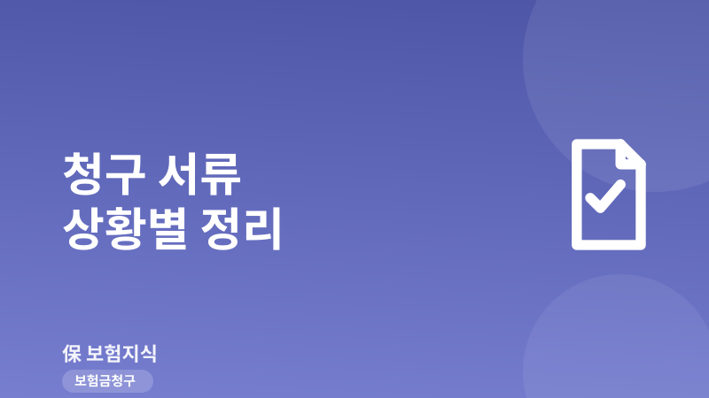
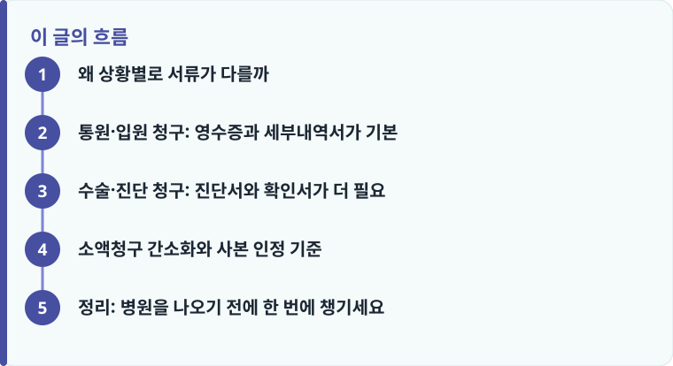

통원·입원은 진료비영수증과 세부내역서가 기본이고, 수술·진단은 여기에 진단서·수술확인서 등 의사 서류가 추가됩니다.
많은 보험사가 실손 기준 100만 원 이하 소액은 진단서 없이 영수증·세부내역서만으로 간소하게 청구를 받아 줍니다.
사본 인정 여부는 담보와 금액에 따라 다르고, 진단서는 원본을 요구하는 경우가 많으므로 미리 확인해야 합니다.
왜 상황별로 서류가 다를까
보험금 청구 서류는 보험사가 ‘무엇을 얼마나 지급해야 하는지’를 확인하기 위한 근거입니다. 그래서 청구하려는 담보가 통원비인지, 입원비인지, 수술비인지, 진단비인지에 따라 요구하는 서류가 달라집니다. 통원·입원처럼 ‘실제 낸 의료비’를 보상하는 실손 담보는 영수증과 세부내역서로 금액을 확인하면 되지만, 수술·진단처럼 ‘정해진 금액’을 지급하는 정액 담보는 그 사건이 실제로 있었는지 의사 소견으로 증명해야 하기 때문입니다. 담보별 성격이 헷갈린다면 입원·수술·통원 청구 구조를 먼저 보면 흐름이 잡힙니다.
공통으로 필요한 서류는 청구서(보험금 청구 신청서), 신분증 사본, 청구인 통장 사본입니다. 여기에 상황별 의료 서류가 얹히는 구조라고 이해하면 쉽습니다. 청구 절차 전체가 처음이라면 보험금 청구 방법을 함께 읽고, 담보별 필요서류의 큰 그림은 필요서류 안내에서 확인하면 빠짐없이 준비할 수 있습니다. 참고로 보험금 청구권의 소멸시효는 원칙적으로 3년이므로, 서류가 조금 늦더라도 기한 안에는 반드시 청구를 마쳐야 합니다. 또한 같은 진료라도 실손 담보와 정액 담보를 함께 청구할 수 있으니, 어느 담보에 가입되어 있는지 증권을 먼저 확인하고 그에 맞는 서류를 준비하면 누락을 줄일 수 있습니다.
통원·입원 청구: 영수증과 세부내역서가 기본
통원 청구의 기본 서류는 진료비 영수증과 진료비 세부내역서입니다. 영수증에는 급여·비급여 합계와 본인부담금이 찍혀 있고, 세부내역서에는 어떤 검사·처치·약제에 얼마가 들었는지가 항목별로 나옵니다. 실손보험은 급여 부분의 자기부담금이 대체로 20%, 비급여 부분이 30% 수준이라 항목이 급여인지 비급여인지에 따라 보상 금액이 달라지므로, 세부내역서가 있어야 정확한 계산이 됩니다. 약을 처방받았다면 약국 영수증과 처방전(또는 약제비 계산서)도 함께 챙기는 것이 좋습니다.
입원 청구는 통원과 서류가 비슷하지만, 입원 사실을 증명하는 서류가 더 필요합니다. 입원 진료비 영수증과 세부내역서에 더해, 입·퇴원 확인서나 입원 기간이 적힌 진단서를 요구하는 경우가 많습니다. 입원 일당(정액) 담보가 있다면 며칠 입원했는지가 지급액을 좌우하기 때문에, 입원 기간이 명확히 적힌 서류가 핵심이 됩니다. 실손 청구의 세부 절차와 급여·비급여 계산이 궁금하다면 실손보험 청구 설명을 참고하세요.
한 가지 더 알아 둘 점은 세부내역서의 이름이 병원마다 조금씩 다르다는 것입니다. ‘진료비 세부산정내역서’, ‘급여·비급여 진료비 세부내역서’처럼 표현이 달라도 항목별 금액이 적혀 있으면 같은 역할을 합니다. 원무과에 ‘보험 청구용’이라고 말하면 필요한 서식을 한 번에 안내받기 쉽습니다. 비급여 항목이 많은 도수치료·주사치료 등은 세부내역서가 없으면 보상 계산 자체가 어려우므로, 금액이 크지 않더라도 세부내역서는 기본으로 챙기는 것이 좋습니다.

수술·진단 청구: 진단서와 확인서가 더 필요
수술비를 청구할 때는 영수증만으로는 부족하고, 어떤 수술을 언제 받았는지를 증명하는 수술확인서 또는 수술명·수술일이 기재된 진단서가 필요합니다. 정액 수술비 담보는 약관에서 수술을 1~5종 등으로 분류해 종별로 지급액을 정해 두는 경우가 많아서, 정확한 수술명이 적혀 있어야 몇 종에 해당하는지 판단할 수 있습니다. 내시경으로 용종을 제거하는 것처럼 ‘수술로 볼지’가 애매한 경우도 있으므로, 수술확인서에 시술 내용이 구체적으로 적히도록 요청하는 것이 좋습니다.
진단비(예: 암 진단비, 뇌·심장 진단비)를 청구할 때는 진단 확정을 증명하는 서류가 가장 중요합니다. 진단서와 함께 조직검사 결과지(병리조직검사 보고서)나 영상 판독 소견서를 요구하는 경우가 많은데, 암 진단비는 약관상 ‘조직검사로 확진’을 지급 조건으로 두는 사례가 흔하기 때문입니다. 진단명은 질병분류기호(예: C코드)까지 정확히 기재되어야 분류 다툼을 줄일 수 있습니다. 진단명·확진 시점 때문에 지급이 지연되거나 거절되는 사례도 있으니, 서류를 뗄 때 진단 근거가 명확히 적혔는지 확인하는 습관이 도움이 됩니다.
작성·검수 기준
이 글은 특정 보험사의 청구 양식을 안내하기 위한 것이 아니라, 통원·입원·수술·진단 청구에서 공통적으로 필요한 서류의 기준을 정리하기 위해 작성했습니다. 요구 서류의 종류, 소액청구 간소화 기준 금액, 사본 인정 여부는 보험사와 상품, 담보에 따라 달라질 수 있습니다.
정확한 제출 서류와 방법은 본인 증권의 약관과 상품설명서, 그리고 필요서류 안내를 함께 확인하고, 청구 전 보험사 콜센터나 앱에서 다시 점검하는 것이 가장 안전합니다.
소액청구 간소화와 사본 인정 기준
모든 청구에 진단서가 필요한 것은 아닙니다. 실손보험은 청구 금액이 크지 않으면 진단서 없이 영수증과 세부내역서만으로 받아 주는 ‘소액청구 간소화’를 운영하는 곳이 많습니다. 흔한 기준은 1회 청구 100만 원 이하이며, 이 경우 비용이 드는 진단서를 굳이 떼지 않아도 됩니다. 사본 인정 여부도 미리 알아 두면 좋습니다. 실손 통원·입원처럼 소액이면 스마트폰으로 찍은 영수증 사본이나 앱 청구를 인정하는 경우가 많지만, 진단서 원본이나 고액 청구는 원본 제출 또는 원본대조필을 요구할 수 있습니다. 아래 순서로 준비하면 재방문을 줄일 수 있습니다.
- 청구하려는 담보가 통원·입원·수술·진단 중 무엇인지 먼저 구분합니다.
- 공통 서류(청구서, 신분증 사본, 통장 사본)를 준비합니다.
- 상황별 서류(영수증·세부내역서, 진단서·수술확인서·결과지)를 챙깁니다.
- 청구액이 100만 원 이하인지 확인해 진단서 생략이 가능한지 봅니다.
- 사본으로 되는지, 원본이 필요한지 보험사 앱·콜센터로 확인합니다.
정리: 병원을 나오기 전에 한 번에 챙기세요
청구가 번거로운 이유는 대부분 서류를 한 번에 못 떼서 다시 병원에 가야 하기 때문입니다. 통원·입원은 영수증과 세부내역서, 수술·진단은 여기에 진단서·확인서·결과지를 더한다는 큰 틀만 기억하면, 원무과에서 필요한 서류를 한 번에 발급받을 수 있습니다. 소액이면 진단서를 생략할 수 있고 사본도 인정되는 경우가 많으니, 무조건 다 떼기보다 청구액과 담보를 먼저 확인하는 것이 시간과 비용을 아끼는 길입니다.
다른 보험 정보 글이 궁금하다면 보험지식 블로그에서 이어 읽어 보세요. 가입 전에는 반드시 약관과 상품설명서를 확인하는 것이 가장 안전한 방법입니다.